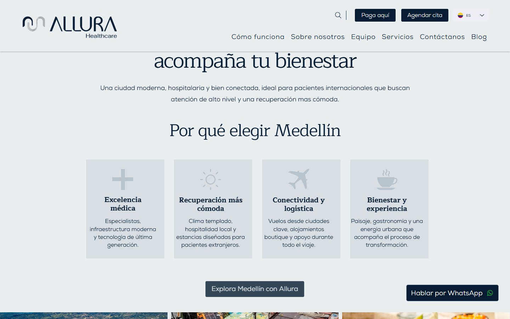
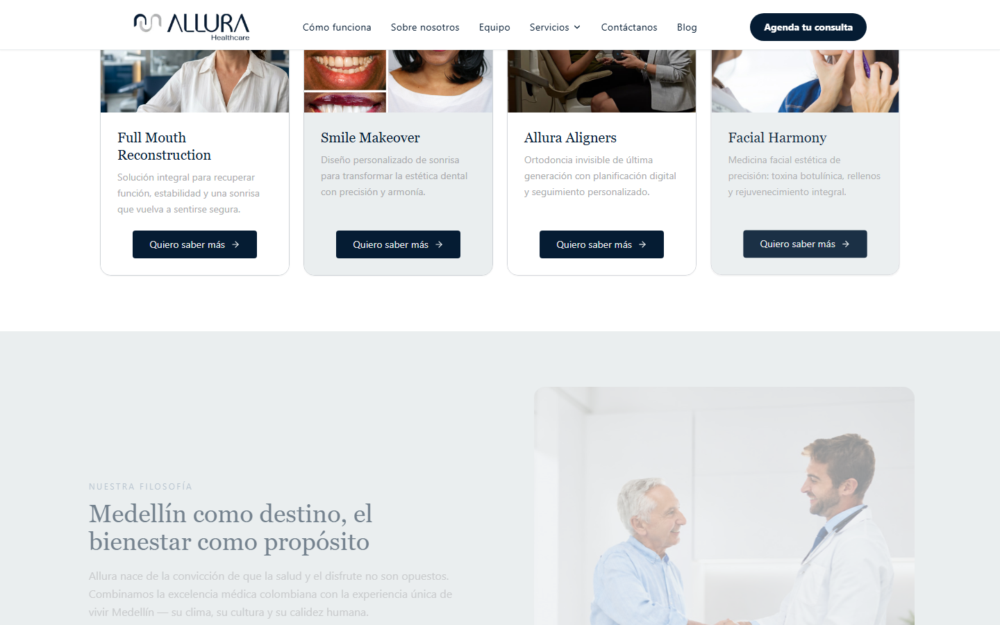
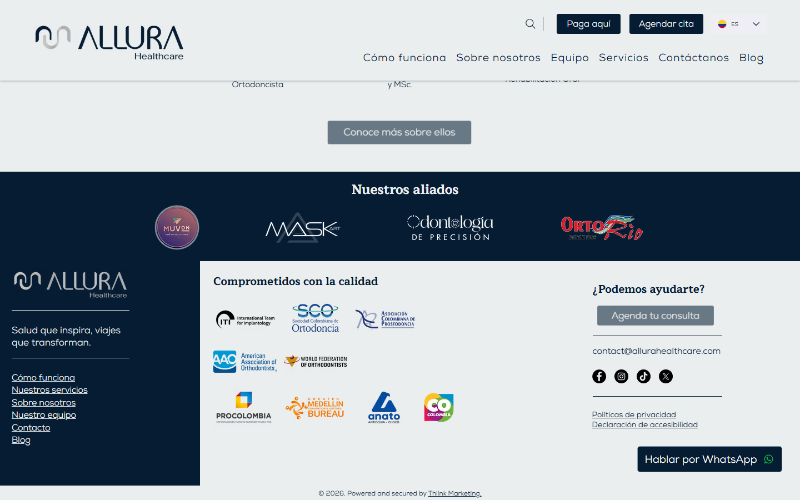
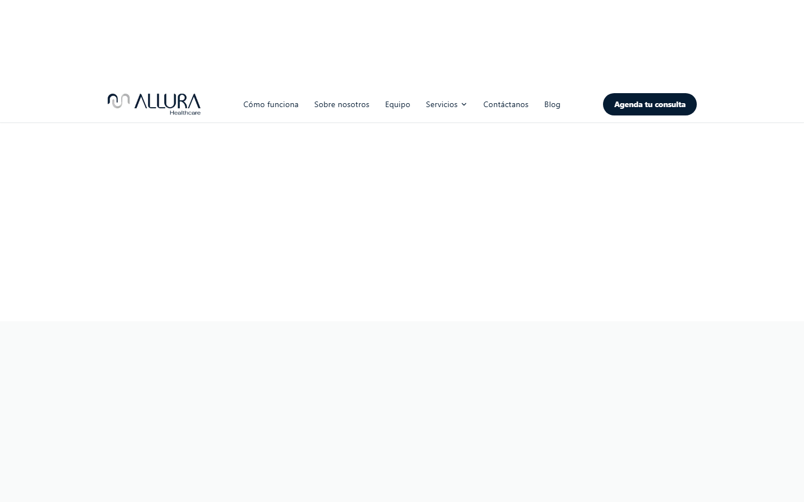

Cómo transformamos la presencia digital de una clínica de turismo médico en Medellín en un embudo de conversión de alta performance.
Sección 2 · Claridad en la Oferta
La oferta original mezclaba terminología clínica técnica con servicios fuera del perfil de la marca. El rediseño organiza todo en 4 rutas centradas en el resultado que desea el paciente.
Nombres que el paciente entiende intuitivamente y que comunican el resultado, no el procedimiento.
Sección 3 · Autoridad y Confianza
En turismo médico, el paciente decide confiar a distancia, en un país desconocido. Ver los rostros y credenciales del equipo es el primer requisito de confianza, no un plus.


"El paciente internacional decide confiar en una clínica antes de contactarla. Ver los rostros y credenciales del equipo reduce la fricción de la primera consulta y elimina objeciones de credibilidad que de otro modo se convierten en rebotes."
Insight CRO
Los pacientes de turismo médico valoran la transparencia del equipo por encima del precio. Una sección de equipo con fotos reales y certificaciones reduce la tasa de rebote y aumenta la intención de primer contacto.
Sección 4 · Optimización de Conversión
Un CTA invasivo genera rechazo. Un CTA contextual y de baja fricción guía al paciente sin interrumpir su proceso de decisión.


| Elemento | ✕ Antes | ✓ Después |
|---|---|---|
| CTA principal | ¡Vamos a chatear! (flotante, verde neón) | Hablar por WhatsApp (ghost, contextual) |
| CTA secundario | Inexistente | Quiero saber más (baja fricción) |
| Nivel de interrupción | Alto — interfiere con la lectura | Nulo — aparece en contexto |
| Jerarquía visual | Rompe la jerarquía del contenido | Respeta la jerarquía, guía el scroll |
Insight CRO
Los botones flotantes de chat generan ceguera a los CTAs (banner blindness) en usuarios con alta intención. Un CTA ghost integrado en el flujo natural de lectura tiene mayor tasa de clic en audiencias premium que los botones de alto contraste.
Resultado
Cada decisión de diseño tiene un fundamento estratégico. El resultado es una presencia digital que trabaja como vendedor 24/7 para Allura Healthcare.
Allura Healthcare · Medellín, Colombia